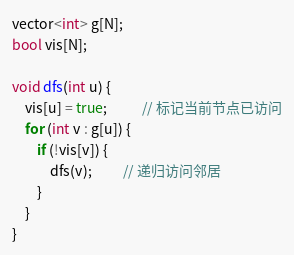
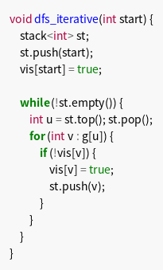
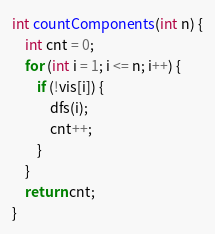
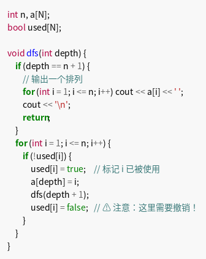

深度优先搜索（DFS）的核心思想是：沿着一条路径尽可能深地搜索，直到无法继续再回溯。
本章介绍的「栈式深搜」是指：整个搜索过程仅靠函数调用栈（或显式栈）来维护状态，不需要额外的全局状态数组来记录"选择了什么"。这是最基础的 DFS 形式，也是新手必须首先掌握的。
与回溯法的区别
| 特性 | 栈式深搜 | 回溯法 |
|---|---|---|
| 状态维护 | 仅靠函数参数和局部变量 | 需要外部数组/变量记录选择 |
| 是否需要"撤销" | ❌ 不需要 | ✅ 需要 |
| 典型应用 | 连通块、图遍历、简单枚举 | 排列组合、子集、N 皇后 |
| 代码复杂度 | 简单 | 稍复杂 |
如果你写 DFS 时不需要
vis[x] = true之后再vis[x] = false，那就是栈式深搜；如果需要"选了再取消"，那就是回溯法。
递归实现
用递归函数调用栈隐式维护访问状态和路径，代码最简洁。

关键点：
vis[u] = true后不需要在递归返回时改回false- 因为每个节点只需要访问一次，状态是单向的
非递归实现（显式栈）
某些场景下（如需要精细控制遍历顺序，或担心递归深度过大），可以用显式栈代替递归。

显式栈的版本在 CSP 中较少用到，但了解它有助于理解递归的本质。
经典模型：连通块
统计无向图中连通分量的数量：

经典模型：全排列（简单枚举）
用 DFS 枚举 $1 \sim n$ 的全排列：

等等，这个例子里有
used[i] = false，那它是不是回溯法？答案是：这是回溯法。 因为每个数只能用一次，需要外部数组
used[]记录"选了什么"，并在递归返回后撤销。全排列的更好归属是回溯法。本章的栈式深搜，重点是不需要撤销的场景。
什么时候用栈式深搜？
✅ 适合栈式深搜：
- 图的遍历、连通块统计
-
树的深度优先遍历
-
每个状态只需要访问一次，不需要"尝试再取消"
❌ 不适合栈式深搜（应使用回溯法）：
- 需要从多个选择中选一个，选完还要试别的（如 N 皇后、数独）
- 需要枚举所有方案并比较（如最短路径的所有可能）